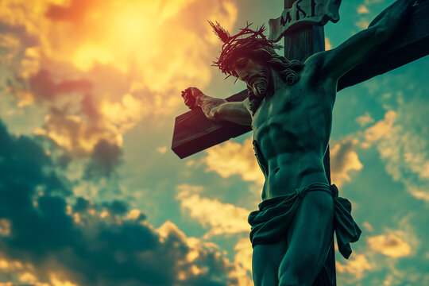
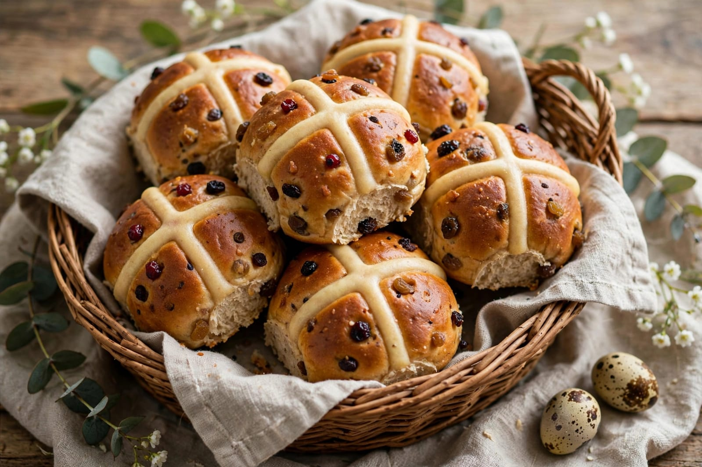
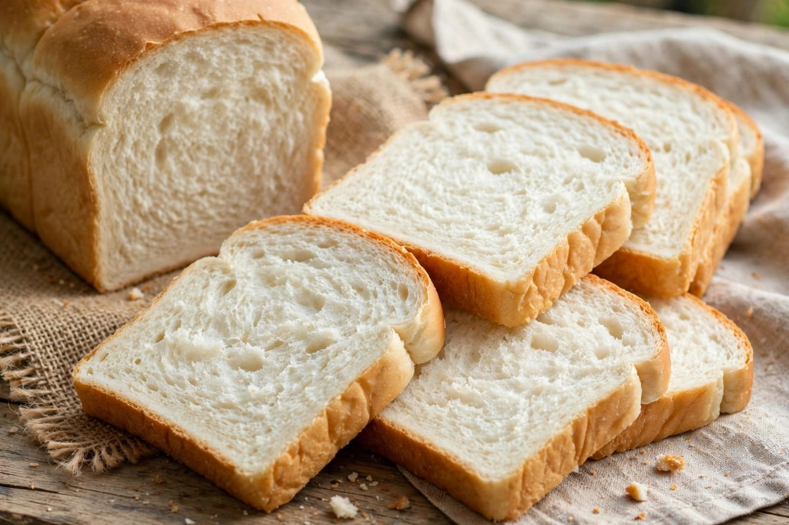

About Good Friday
Good Friday is an important day for Christians around the world. It is observed during Holy Week. Good Friday is observed before Easter Sunday. Christians remember the crucifixion of Jesus Christ on this day. It is a solemn and meaningful day of faith. People attend special church services. Churches are often decorated simply on Good Friday. Many Christians spend time in prayer. People reflect on the teachings of Jesus. The day encourages love and forgiveness. Christians remember the sacrifice of Jesus. Special prayers are held in churches. Bible readings are an important part of the services. Hymns and devotional songs may be sung. Many churches conduct special worship programs. People gather quietly for prayer and reflection. Some Christians observe fasting on this day. Others avoid certain foods as part of their religious tradition. Good Friday is observed in many countries. It is a public holiday in some places. The date of Good Friday changes every year. It depends on the date of Easter. Good Friday is part of the Christian Easter season. Holy Week includes several important days. Palm Sunday begins Holy Week. Maundy Thursday is observed before Good Friday. Good Friday is followed by Holy Saturday. Easter Sunday follows Holy Saturday. Christians believe Easter celebrates the resurrection of Jesus. Good Friday reminds people about compassion and sacrifice. It encourages people to forgive others. It teaches the importance of kindness. Many people spend the day peacefully with their families. Some churches organize processions. Stations of the Cross are observed in many Christian communities. People remember important events connected with Jesus. The day has deep spiritual importance. Good Friday is a day of prayer and reflection.
Good Friday is observed with great respect by Christians. Church services may be held during the morning or afternoon. Some churches hold services in the evening. Bible passages related to the crucifixion are read. Priests and pastors give special messages. People listen quietly during worship. Religious songs are sung during some services. Many Christians spend extra time in prayer. Some people visit churches with their families. Special prayers may be offered for peace. People may pray for their families and communities. Good Friday encourages people to think about forgiveness. It also reminds people to help others. Charity and kindness are valued during the season. Many Christian families spend time together. Some people prepare simple meals on this day. In some traditions, meat may be avoided. Fish and vegetarian foods may be eaten in some communities. Different churches follow different customs. Good Friday traditions vary between countries. In India, Christian communities observe the day in different ways. Churches in cities and villages may hold special services. Processions are organized in some places. People may carry crosses during religious processions. Some communities organize prayer gatherings. Churches may have special decorations related to Holy Week. The atmosphere is generally quiet and reflective. People wear simple or formal clothes for church services. Families may read Bible passages together. Children may learn about the importance of Good Friday. The day helps Christians remember the teachings of Jesus. It encourages people to show love to others. It teaches forgiveness and compassion. Good Friday is followed by Easter celebrations. Easter brings a message of hope and new life. The two days are closely connected in Christian faith. Good Friday is therefore an important part of Easter. It is remembered with prayer and devotion.
Good Friday has great spiritual importance for Christians. It is a day of quiet prayer and reflection. People remember Jesus Christ and his teachings. The day teaches the value of love and forgiveness. It encourages people to care for others. Christians attend church services and prayers. Bible readings are an important part of the day. Some people observe fasting according to their traditions. Families spend time together in prayer. Churches bring communities together. Good Friday is observed with respect and solemnity. Different countries have different customs. Christian communities in India also observe the day. Special services are held in many churches. People reflect on faith and sacrifice. The day encourages peace and kindness. It reminds people to forgive others. Good Friday is followed by Easter Sunday. It is an important day in the Christian calendar.
Special Foods

Hot Cross Buns
Sweet spiced buns traditionally associated with Good Friday.

Bread
Bread may be included in simple meals during the Holy Week.
Rice
Simple rice dishes can be part of vegetarian meals.